60 sprites de cenário em PNG transparente. Clique numa peça para baixar seu arquivo. O ponto de apoio é dado em pixels a partir do canto superior esquerdo.
No Studio, use Arquivo → Importar sprites / atlas. Selecione o PNG, use as dimensões indicadas, um quadro e o pivô da peça.
Abrir o Cais dos Carretéis no Studio · Baixar projeto editável
Abrir Praça da Matriz · Abrir Jardins e Terraços
Abrir Porto Novo · Abrir Palafitas
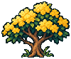
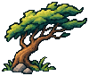
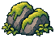
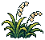
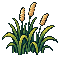
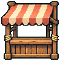
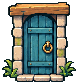
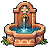
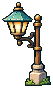
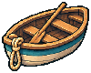
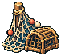
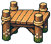
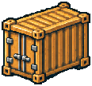
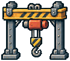
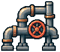
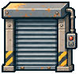
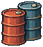
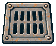
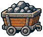
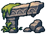
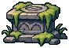
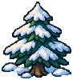
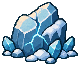
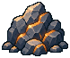
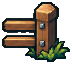
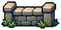
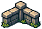
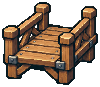
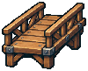
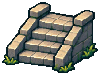
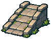
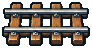
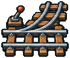
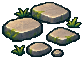